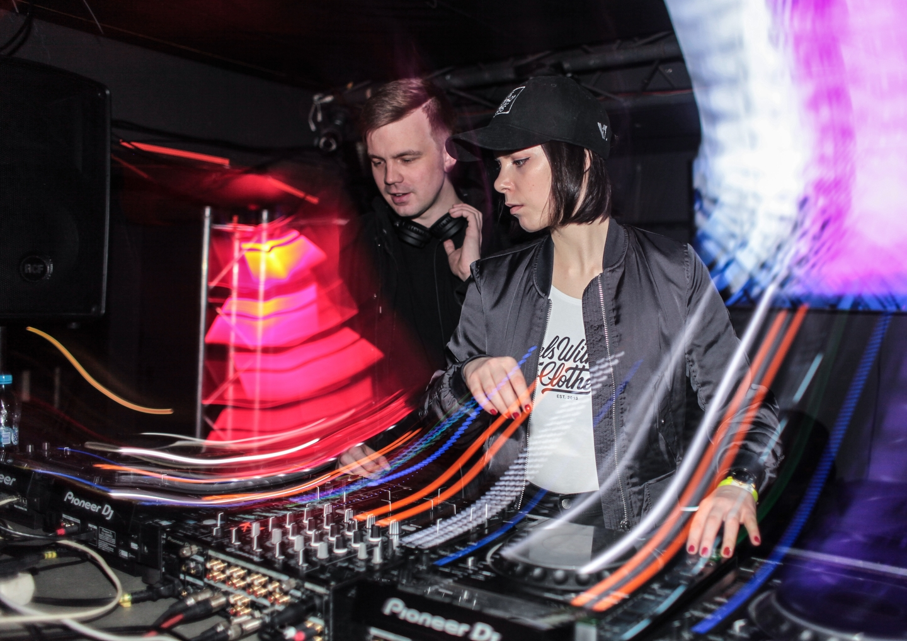

About The Musicians
"We are more comfortable with not fighting what comes naturally. Before we might have thought, ‘We need to be smarter than this'"
- Daniel de Roshay
Geneviève Aug & Daniel de Roshay
Geneviève Aug and Daniel de Roshay had a few mutual friends, who happened to run a record label, seeking tracks for a compilation. With an immediate connection, the pair decided to try their hand at making a song. That’s when they created their breakout single, We Are Your Friends – a feel-good, funk-filled, instant anthem that lost the remix contest, but won the attention of Pedro Winter, director of the newly founded Ed Banger Records, who boasted Daft Punk as former clients. One week later, they were in his office, signing a record deal.
Daniel de Roshay and Geneviève Aug had a few mutual friends, who happened to run a record label, seeking tracks for a compilation. With an immediate connection, the pair decided to try their hand at making a song. That’s when they created their breakout single, We Are Your Friends – a feel-good, funk-filled, instant anthem that lost the remix contest, but won the attention of Pedro Winter, director of the newly founded Ed Banger Records, who boasted Daft Punk as former clients. One week later, they were in his office, signing a record deal.